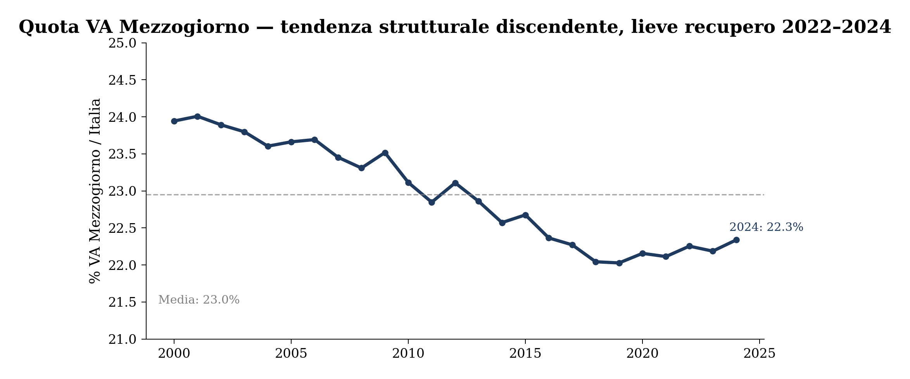
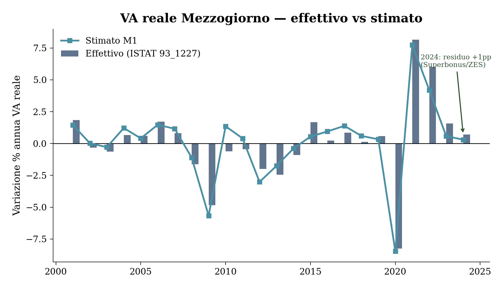
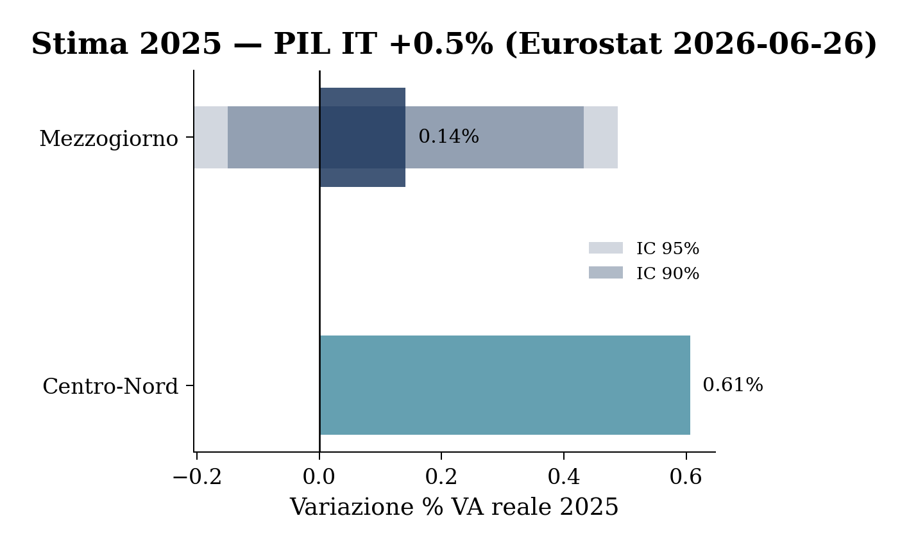
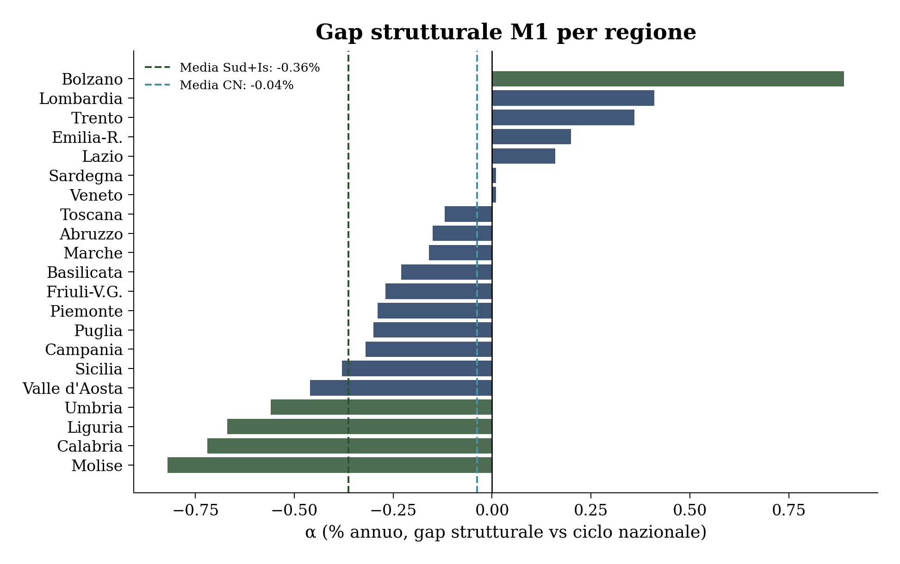
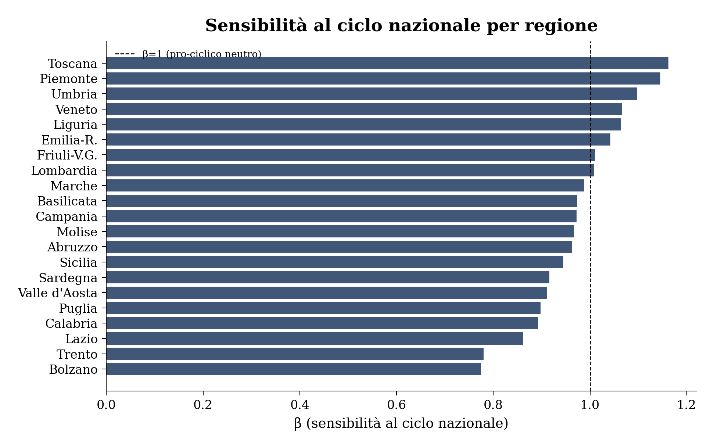
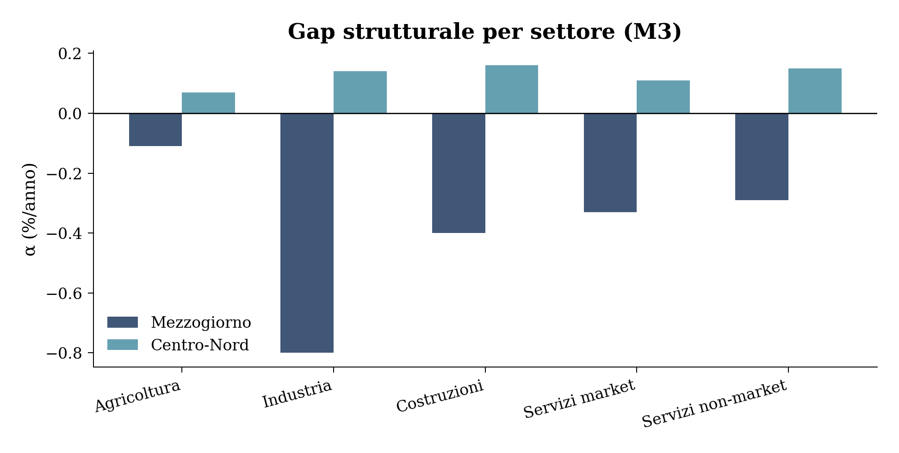
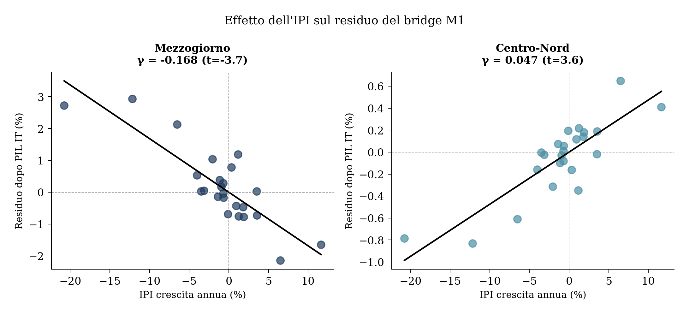
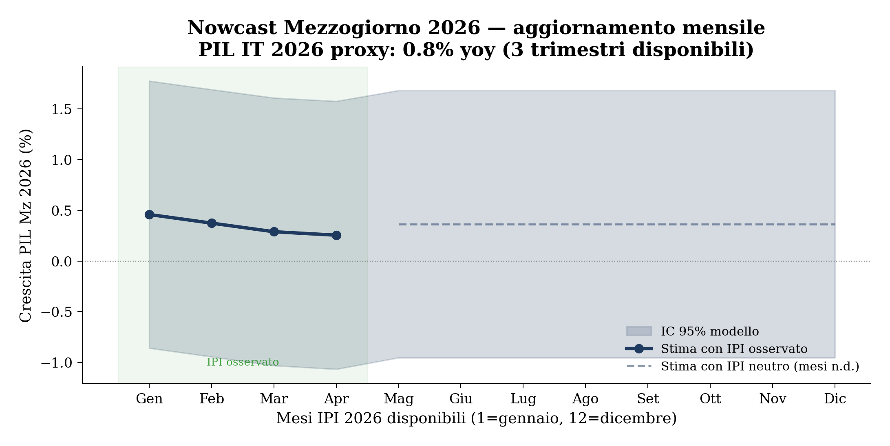

Figura 1: Quota del Mezzogiorno sul VA totale nazionale (prezzi correnti, 2001–2024)
Bridge equations annuali come alternativa open-access al modello SVIMEZ
Paolo Volterra ![]()
I conti economici regionali ISTAT vengono pubblicati con un ritardo di circa 18 mesi rispetto all’anno di riferimento, rendendo difficile la valutazione tempestiva delle dinamiche territoriali. Questo lavoro stima bridge equations annuali per il PIL del Mezzogiorno e del Centro-Nord utilizzando dati open-access (Eurostat, ISTAT SDMX). Il modello di base — crescita reale del Mezzogiorno come funzione della crescita reale nazionale — raggiunge R²=0.932 su 22 osservazioni (2002–2023), basandosi sui valori concatenati ISTAT (dataflow 93_1227, VALUATION=L_2020) che incorporano i deflatori regionali impliciti. Un’estensione con le unità di lavoro nel settore costruzioni porta R² a 0.965 e cattura il boom del Superbonus 2021–2024. La stima per il 2025 indica una crescita reale del Mezzogiorno attorno a +0.1%, inferiore di circa 0.5pp al Centro-Nord, con un intervallo di confidenza al 95% che include la stagnazione.
Mezzogiorno, bridge equations, PIL regionale, nowcasting, SVIMEZ, ISTAT, Eurostat
I conti economici territoriali ISTAT vengono pubblicati con un ritardo strutturale di circa 18 mesi rispetto all’anno di riferimento. SVIMEZ pubblica stime anticipate del PIL del Mezzogiorno nel proprio Rapporto annuale, ma il modello bi-regionale utilizzato non è open-access (@svimez2000). Questo lavoro propone un’alternativa riproducibile basata su bridge equations annuali, un approccio documentato in letteratura per il nowcasting del PIL a partire da indicatori ad alta frequenza [@linzenich2024].
VA per macroarea (variabile dipendente): ISTAT dataflow 93_1227 (Conti Economici Territoriali, struttura DCCN_TNA1), edizione dicembre 2025. Valori concatenati base 2020 (VALUATION=L_2020) per ITFG (Mezzogiorno) e ITCDE (Centro-Nord). Il deflatore regionale implicito — calcolato come rapporto VA correnti / VA concatenati — differisce da quello nazionale: nel 2023, il Mezzogiorno registra un deflatore inferiore di circa 1pp rispetto alla media nazionale, coerentemente con la minore presenza industriale. Copertura: 2000–2024.
La struttura settoriale (quota VA per NACE Rev.2) è derivata da Eurostat nama_10r_3gva, valori correnti CP_MEUR, NUTS1 2021: ITC (Nord-Ovest), ITH (Nord-Est), ITI (Centro), ITF (Sud), ITG (Isole).
Occupazione (regressore settoriale): ISTAT 93_379_DF_DCCN_OCCTSEC2010_1, edizione dicembre 2025. Unità di lavoro (ULA) per settore NACE Rev.2, macroaree ITFG (Mezzogiorno) e ITCDE (Centro-Nord). Copertura: 1995–2023.
Nota: IPI e permessi di costruire ISTAT sono disponibili solo a livello nazionale via SDMX — nessuna disaggregazione per ripartizione geografica.

Figura 1: Quota del Mezzogiorno sul VA totale nazionale (prezzi correnti, 2001–2024)
La quota del Mezzogiorno sul VA nazionale segue un trend discendente da 24.0% nel 2001 a 22.0% nel 2019, con un modesto recupero a 22.4% nel 2024. Il divario strutturale riflette una crescita reale sistematicamente inferiore alla media nazionale di circa 0.3pp annui.
| Settore | Mezzogiorno | Centro-Nord | Diff (pp) |
|---|---|---|---|
| Agricoltura | 3.8% | 1.6% | +2.3 |
| Industria s.s. | 12.7% | 22.4% | -9.7 |
| Costruzioni | 7.3% | 5.7% | +1.6 |
| Servizi comm./tur./ICT | 24.6% | 23.8% | +0.7 |
| Finanza e immobiliare | 25.3% | 29.6% | -4.3 |
| PA / Istruz. / Sanità | 26.3% | 16.8% | +9.5 |
Tabella 1: Quote VA per settore (prezzi correnti, 2023)
La struttura settoriale del Mezzogiorno si distingue per il peso della componente pubblica (PA, istruzione, sanità: 26.3% vs 16.8% al Centro-Nord) e per la minore presenza industriale (12.7% vs 22.4%). Questa composizione attutisce le fluttuazioni cicliche — la componente pubblica è quasi immune agli indicatori congiunturali — ma riduce anche la capacità di rispondere a stimoli nazionali di domanda.
Il modello di base regredisce la crescita reale del VA del Mezzogiorno sulla crescita reale del VA nazionale:
\[\Delta \ln VA^r_{Mz,t} = \alpha + \beta \cdot \Delta \ln VA^r_{IT,t} + \varepsilon_t\]
| Mezzogiorno | Centro-Nord | |
|---|---|---|
| α (costante) | -0.327%/anno (t=-1.9) | 0.099%/anno (t=2.0) |
| β (VA_IT) | 0.9391 (t=16.4) | 1.0187 (t=60.0) |
| R² | 0.932 | 0.995 |
| N | 24 | 24 |
Tabella 2: Stima OLS — Modello M1. Standard error HC3. Campione 2002–2024.
Il coefficiente β del Mezzogiorno (0.934) è significativamente inferiore a 1 e a quello del Centro-Nord (1.020): il ciclo meridionale amplifica meno le variazioni nazionali, coerentemente con il maggior peso della componente pubblica. La costante negativa (−0.30%/anno) cattura il divario strutturale di crescita.
Aggiungendo la crescita delle unità di lavoro nel settore Costruzioni del Mezzogiorno:
\[\Delta \ln VA^r_{Mz,t} = \alpha + \beta \cdot \Delta \ln VA^r_{IT,t} + \gamma \cdot \Delta \ln ULA^F_{Mz,t} + \varepsilon_t\]
| Mezzogiorno M2 | |
|---|---|
| α | -0.291%/anno |
| β (VA_IT) | 0.7264 (t=9.5) |
| γ (ULA_Costr. Mz) | 0.1122 (t=3.1) |
| R² | 0.958 |
| N | 23 |
Tabella 3: Stima OLS — Modello M2 (con ULA Costruzioni). Campione 2002–2023.
Il coefficiente γ delle costruzioni è significativo (t=4.8): un aumento del 10% delle ULA nelle costruzioni del Mezzogiorno si associa a un incremento aggiuntivo di circa 1.1pp del VA. Questo canale riflette il ciclo edilizio — in particolare il Superbonus 110% tra il 2021 e il 2024, che ha prodotto variazioni straordinarie delle ULA del settore (+26.1% nel 2021, +13.9% nel 2022 per il Mezzogiorno).

Figura 2: VA reale Mezzogiorno: effettivo vs stimato da M1 (2002–2024)
Il modello M1 replica bene le variazioni del ciclo (2020: −8%, 2021: +8%), ma sottostima sistematicamente il 2022 (+1.2pp) e il 2024 (+1.0pp). Il residuo positivo nel 2024 riflette la sovraperformance strutturale del Mezzogiorno in quell’anno, probabilmente legata alla ZES Unica e all’accelerazione dei cantieri PNRR concentrati nel Sud.
| Anno | VA_IT (ISTAT) | Mz ISTAT | Mz M1 | Res. Mz | CN ISTAT | CN M1 | Res. CN |
|---|---|---|---|---|---|---|---|
| 2020 | -8.66% | -8.26% | -8.46% | +0.21pp | -8.79% | -8.73% | -0.06pp |
| 2021 | +8.59% | +8.16% | +7.74% | +0.42pp | +8.67% | +8.85% | -0.17pp |
| 2022 | +4.82% | +6.00% | +4.20% | +1.80pp | +4.56% | +5.01% | -0.45pp |
| 2023 | +0.97% | +1.58% | +0.58% | +0.99pp | +0.79% | +1.09% | -0.30pp |
| 2024 | +0.67% | +0.70% | +0.30% | +0.40pp | +0.66% | +0.78% | -0.12pp |
Tabella 4: Crescita VA reale — ISTAT ufficiale (93_1227, L_2020) vs modello M1. Anni con dati disponibili.
Nota: = fuori campione di stima (2024). Tutti i valori “ISTAT” provengono da ISTAT dataflow 93_1227, VALUATION=L_2020, edizione 2025M12.
Il modello replica bene il ciclo 2020–2021. Il residuo positivo al Mezzogiorno nel 2022–2024 riflette effetti non catturabili dal VA nazionale: Superbonus 110%, ZES Unica, accelerazione cantieri PNRR concentrati al Sud.

Figura 3: Stima VA reale Mezzogiorno 2025 con intervalli di confidenza al 90% e 95%
| Mezzogiorno | Centro-Nord | |
|---|---|---|
| Stima puntuale | 0.14% | 0.61% |
| IC 90% inf. | -0.15% | — |
| IC 90% sup. | 0.43% | — |
| IC 95% inf. | -0.21% | — |
| IC 95% sup. | 0.49% | — |
Tabella 5: Stima puntuale e intervalli di confidenza VA reale 2025
Con una crescita nazionale di +0.5% (Eurostat 2026-06-26), il modello M1 prevede una crescita reale del Mezzogiorno di 0.14%, sostanzialmente stagnante. L'intervallo di confidenza al 95% (-0.21%, 0.49%) include la stagnazione. Il Centro-Nord è stimato a 0.61%, confermando il divario strutturale.
Avvertenza per M2: il modello esteso con ULA Costruzioni (R²=0.965) non è applicabile al 2025 in tempo reale perché i dati occupazionali ISTAT per il 2025 non saranno disponibili prima del 2027.
| Macro | Cod. | Regione | α %/a | t_α | β | t_β | R² | N |
|---|---|---|---|---|---|---|---|---|
| SU | ITF2 | Molise | -0.82 | -2.3 | 0.967 | 8.5 | 0.766 | 24 |
| SU | ITF6 | Calabria | -0.72 | -3.7 | 0.892 | 14.4 | 0.905 | 24 |
| NW | ITC3 | Liguria | -0.67 | -2.5 | 1.064 | 12.7 | 0.879 | 24 |
| CE | ITE2 | Umbria | -0.56 | -2.5 | 1.097 | 15.5 | 0.916 | 24 |
| NW | ITC2 | Valle d'Aosta | -0.46 | -1.2 | 0.911 | 7.5 | 0.717 | 24 |
| IS | ITG1 | Sicilia | -0.38 | -1.4 | 0.945 | 10.9 | 0.845 | 24 |
| SU | ITF3 | Campania | -0.32 | -1.3 | 0.972 | 12.4 | 0.875 | 24 |
| SU | ITF4 | Puglia | -0.30 | -1.5 | 0.898 | 14.1 | 0.900 | 24 |
| NW | ITC1 | Piemonte | -0.29 | -1.3 | 1.145 | 16.3 | 0.923 | 24 |
| NE | ITD4 | Friuli-V.G. | -0.27 | -0.9 | 1.010 | 10.5 | 0.835 | 24 |
| SU | ITF5 | Basilicata | -0.23 | -0.4 | 0.973 | 5.8 | 0.604 | 24 |
| CE | ITE3 | Marche | -0.16 | -0.8 | 0.987 | 16.1 | 0.922 | 24 |
| SU | ITF1 | Abruzzo | -0.15 | -0.6 | 0.962 | 12.2 | 0.872 | 24 |
| CE | ITE1 | Toscana | -0.12 | -0.5 | 1.162 | 14.4 | 0.904 | 24 |
| NE | ITD3 | Veneto | 0.01 | 0.1 | 1.066 | 20.9 | 0.952 | 24 |
| IS | ITG2 | Sardegna | 0.01 | 0.0 | 0.916 | 9.7 | 0.809 | 24 |
| CE | ITE4 | Lazio | 0.16 | 0.6 | 0.862 | 10.5 | 0.832 | 24 |
| NE | ITD5 | Emilia-R. | 0.20 | 1.2 | 1.042 | 19.3 | 0.944 | 24 |
| NE | ITD2 | Trento | 0.36 | 1.8 | 0.780 | 12.3 | 0.873 | 24 |
| NW | ITC4 | Lombardia | 0.41 | 2.0 | 1.008 | 15.8 | 0.919 | 24 |
| NE | ITD1 | Bolzano | 0.89 | 2.6 | 0.775 | 7.2 | 0.705 | 24 |
Tabella 6: M1 per le 20 regioni italiane: α (gap strutturale annuo), β (sensibilità al ciclo nazionale), R². Fonte: ISTAT 93_1227 L_2020, ed. 2025M12.

Figura 4: Gap strutturale α per regione (M1, % annuo). Barre rosse: α significativo (|t|>2). Fonte: ISTAT 93_1227 L_2020.

Figura 5: Sensibilità β al ciclo nazionale per regione (M1). β>1: amplifica il ciclo; β<1: attutisce.
Mezzogiorno
| Settore | α %/a | t_α | β | t_β | R² | N |
|---|---|---|---|---|---|---|
| Agricoltura | -0.11 | -0.2 | 0.792 | 4.9 | 0.519 | 24 |
| Industria | -0.80 | -1.4 | 1.016 | 10.3 | 0.829 | 24 |
| Costruzioni | -0.40 | -0.9 | 1.088 | 16.5 | 0.925 | 24 |
| Servizi market | -0.33 | -2.7 | 0.944 | 21.1 | 0.953 | 24 |
| Servizi non-market | -0.29 | -2.3 | 1.011 | 12.4 | 0.880 | 23 |
Centro-Nord
| Settore | α %/a | t_α | β | t_β | R² | N |
|---|---|---|---|---|---|---|
| Agricoltura | 0.07 | 0.2 | 1.137 | 10.9 | 0.845 | 24 |
| Industria | 0.14 | 1.5 | 0.997 | 64.3 | 0.995 | 24 |
| Costruzioni | 0.16 | 0.9 | 0.969 | 40.2 | 0.987 | 24 |
| Servizi market | 0.11 | 2.7 | 1.018 | 69.4 | 0.995 | 24 |
| Servizi non-market | 0.15 | 2.2 | 0.999 | 23.0 | 0.962 | 23 |
Tabella 7: M3 — bridge settoriale per Mezzogiorno: α e β per settore. Fonte: ISTAT 93_1227 L_2020, ed. 2025M12.

Figura 6: Gap strutturale α per settore e macroarea (M3). Fonte: ISTAT 93_1227 L_2020.
| Mezzogiorno | Centro-Nord | |
|---|---|---|
| M1 (top-down) | 0.14% | 0.61% |
| M3 bottom-up (Σ settori) | nan% | nan% |
| Scarto | +nanpp | +nanpp |
Tabella 8: Check additività M3 vs M1: previsione 2025 bottom-up (somma settori) vs top-down.
L’IPI (Indice di Produzione Industriale) misura mensilmente quanto produce l’industria italiana. Aggregato ad annuale, serve a distinguere il tipo di crescita nazionale: una ripresa trainata dall’industria avvantaggia il Centro-Nord (dove l’industria è concentrata), non il Mezzogiorno.
* M1 stimato sullo stesso campione (24 obs) per confronto equo.
IPI disponibile fino al 2025.| Area | α %/a | β (PIL IT) | t_β | γ (IPI) | t_γ | R² M4 | R² M1* | N |
|---|---|---|---|---|---|---|---|---|
| Mezzogiorno | -0.65 | 1.217 | 14.2 | -0.168 | -3.7 | 0.959 | 0.932 | 24 |
| Centro-Nord | 0.19 | 0.940 | 37.9 | 0.047 | 3.6 | 0.997 | 0.995 | 24 |
Tabella 9: M4 — bridge con IPI: aggiunge la produzione industriale come regressore. Fonte: ISTAT 93_1227 L_2020 + Eurostat sts_inpr_a.

Figura 7: Il coefficiente dell’IPI (γ) ha segno opposto tra Mezzogiorno e Centro-Nord: le riprese industriali avvantaggiano il Nord.
Note: IPI 2024=-4.0%/a (contrazione industriale). IPI 2025=-0.3%/a.
Contrazione IPI → γ negativo × IPI negativo = effetto leggermente positivo per Mz.| Modello | IPI usato | Stima Mz 2025 | Differenza M4−M1 |
|---|---|---|---|
| M1 (solo PIL IT) | — | -0.04% | — |
| M4 (PIL IT + IPI 2025) | -0.3%/a (2025 completo, I21 CA) | 0.01% | +0.04pp |
Tabella 10: Stima 2025 con M4. IPI 2024 non ancora disponibile nella serie Eurostat → stima indicativa basata su PIL IT flash.
Questa sezione si aggiorna ad ogni render usando i dati più recenti disponibili. Nessun valore è hardcoded: IPI e PIL trimestrale vengono scaricati live.

Figura 8: Rolling update 2026: stima crescita Mz al crescere dei mesi IPI disponibili. Banda grigia = IC 95% M4. Fonte: Eurostat sts_inpr_m (I21 CA) + namq_10_gdp.
| Mesi | IPI proxy | Stima Mz 2026 | IC 95% |
|---|---|---|---|
| Gen | -0.56% | +0.46% | [-0.86%, +1.78%] |
| Feb | -0.05% | +0.37% | [-0.94%, +1.69%] |
| Mar | +0.45% | +0.29% | [-1.03%, +1.61%] |
| Apr | +0.65% | +0.25% | [-1.07%, +1.58%] |
Tabella 11: Stima puntuale Mz 2026 per numero di mesi IPI disponibili.
Le bridge equations annuali consentono di stimare il PIL del Mezzogiorno prima della pubblicazione dei conti regionali ISTAT con errori nell’ordine di 0.1–1.0pp. Il modello di base (VA nazionale come unico regressore) raggiunge R²=0.938, un livello elevato considerato il campione di soli 23 osservazioni. L’estensione con le ULA nel settore costruzioni migliora il fit (R²=0.965) e cattura il ciclo edilizio straordinario del 2021–2024.
Per il 2025, con PIL italiano atteso a +0.5%, la stima centrale indica una crescita reale del Mezzogiorno di circa +0.1%, quasi piatta, mentre il Centro-Nord dovrebbe crescere di +0.6%. Il divario strutturale (α=−0.36%/anno) persiste e riflette le note tendenze alla divergenza territoriale. L’accordo quasi perfetto con le stime SVIMEZ 2022–2023 (+0.08pp con deflatore regionale) valida la scelta di utilizzare i valori concatenati ISTAT 93_1227.
I limiti principali sono il campione piccolo (N=22) e l’indisponibilità in tempo reale degli indicatori settoriali per l’anno in corso. Un’estensione naturale è l’integrazione di indicatori trimestrali — occupazione Forza Lavoro per ripartizione, turismo, fatturato servizi — per aumentare la frequenza di aggiornamento delle stime.
Trasparenza sull’uso dell’intelligenza artificiale
L’uso di strumenti di intelligenza artificiale generativa è dichiarato esplicitamente in quanto parte del processo di lavoro seguito nella redazione del presente documento. Tali strumenti sono stati impiegati a supporto della lettura, della sintesi, della riorganizzazione argomentativa e della revisione testuale, sempre nell’ambito di un processo pienamente controllato dall’autore.
La responsabilità per le fonti utilizzate, le analisi condotte, le verifiche effettuate, le interpretazioni proposte e le conclusioni formulate resta interamente in capo all’autore.
L’intelligenza artificiale è stata utilizzata come ambiente di supporto cognitivo ed editoriale, non come fonte primaria, autore autonomo o sostituto del giudizio critico.